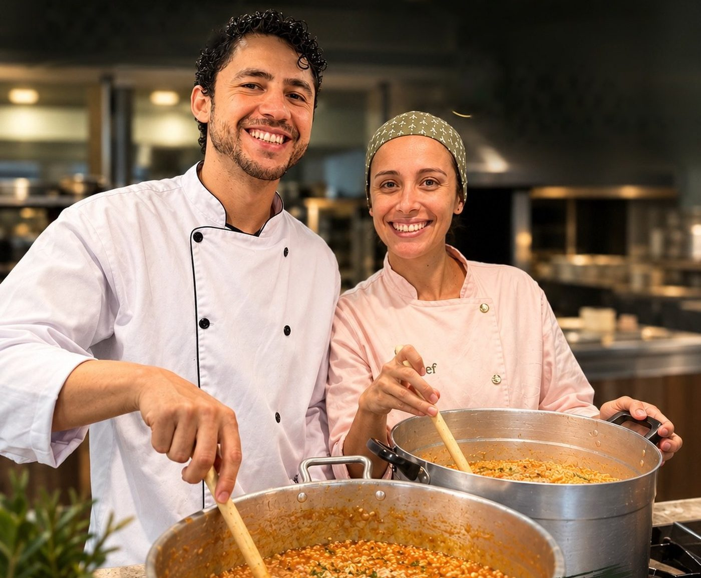
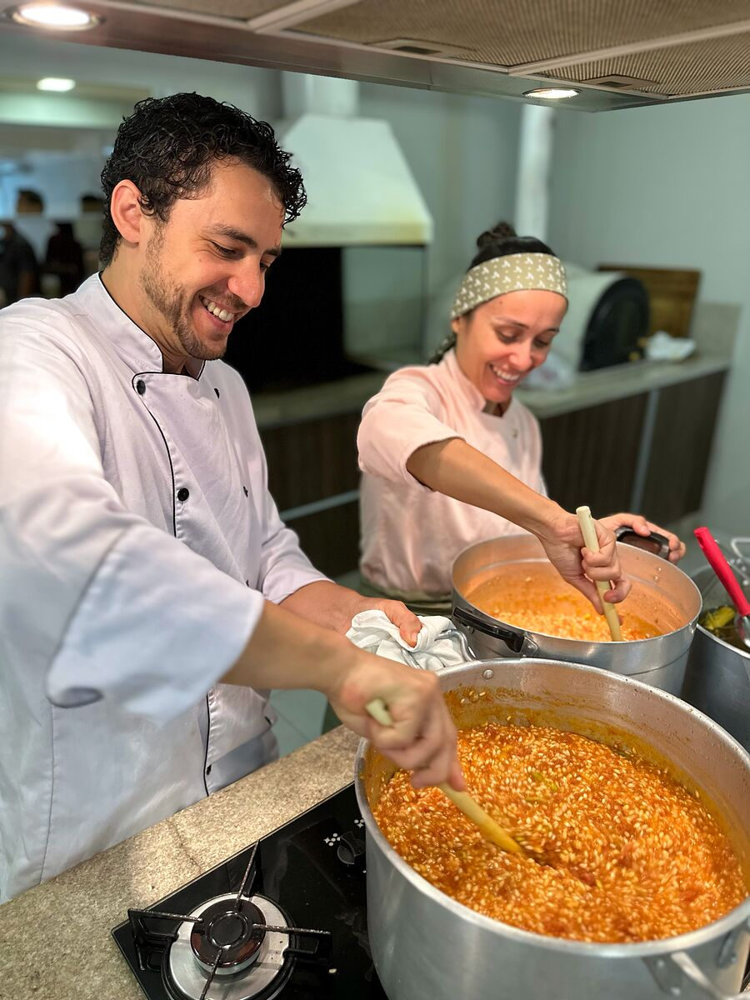
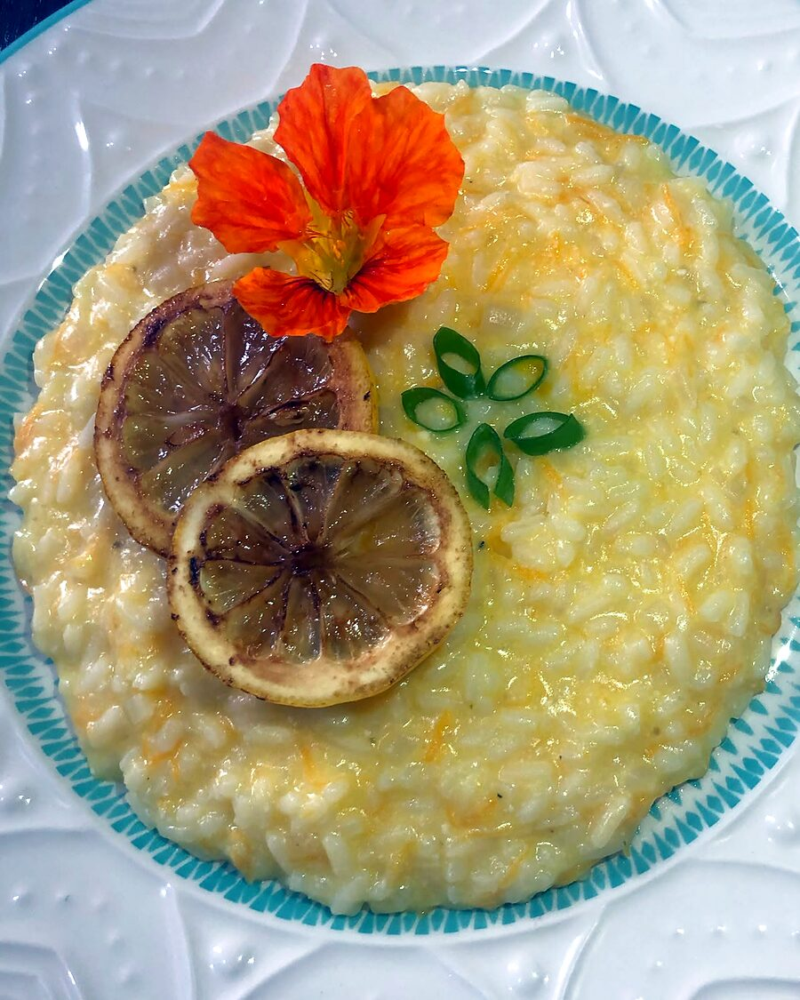
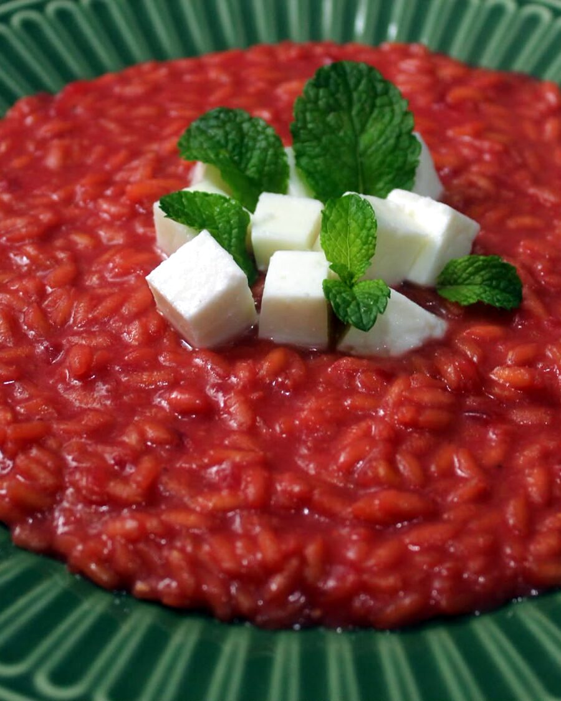
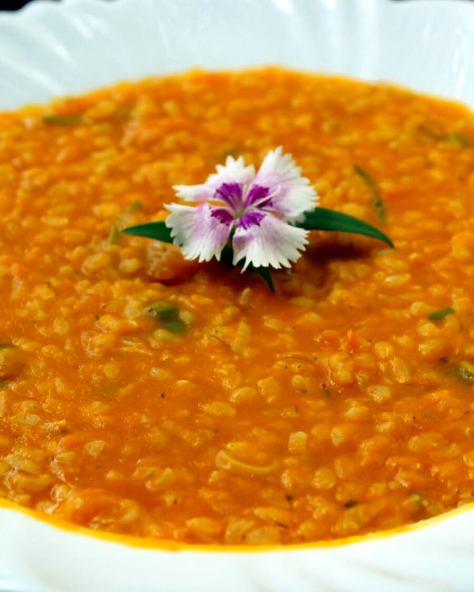
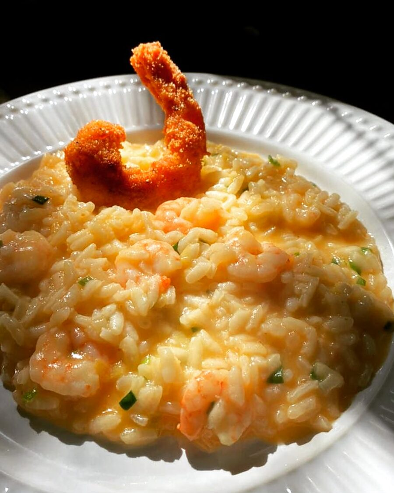
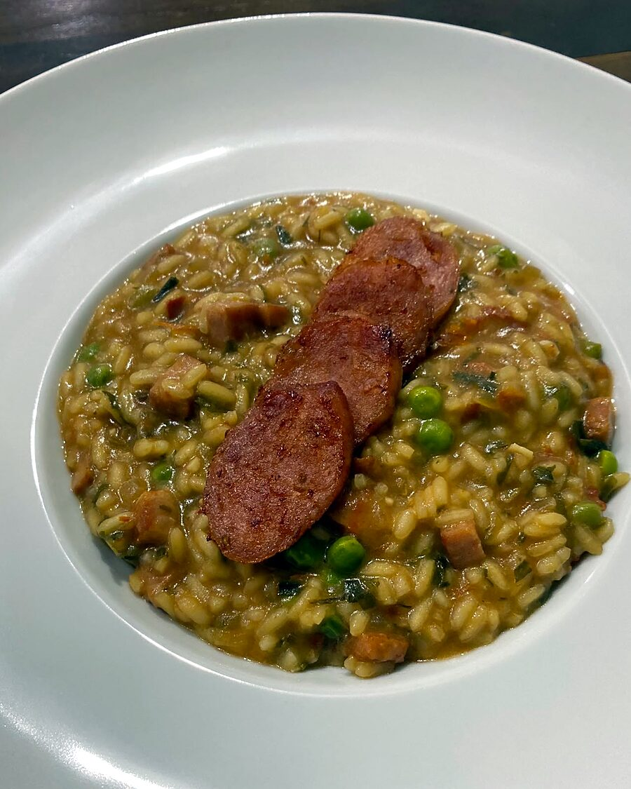
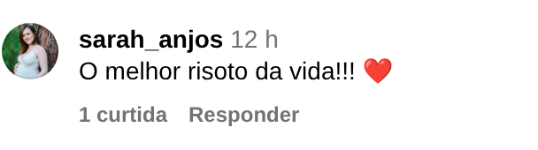
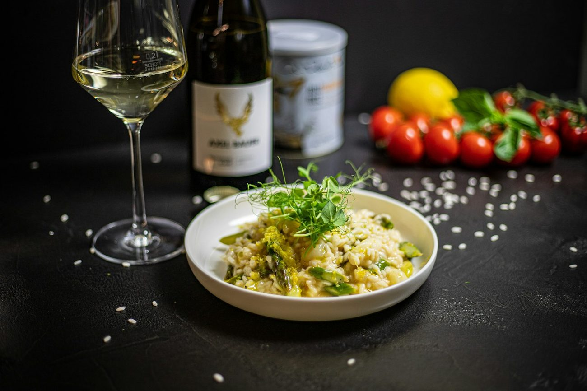

Risoto feito na hora, no seu evento.
Os chefs Jackson e Camila Cassilha cozinham ao vivo para até 60 convidados na Grande Florianópolis.

na gastronomia


Da panela ao prato, no ponto certo.
Risoto não espera. Por isso finalizamos cada panela durante a festa, e seus convidados recebem o prato cremoso e quente.
- 01Cozinha montada no local
Você recebe, a gente cuida do fogão.
- 02Cardápio montado com você
Sabores escolhidos para o seu público.
- 03Dois chefs, a quatro mãos
Técnica de restaurante e carinho de casa.
Risotos autorais.
Escolha um ou mais sabores. Montamos o cardápio de acordo com o seu evento.





Beterraba com queijo de cabra
Cor intensa, toque de hortelã.
Quatro passos até a mesa posta.
- 01
Conte sobre o evento
Data, local e número de convidados.
- 02
Escolha os sabores
Montamos o cardápio juntos.
- 03
Garanta a data
Orçamento aprovado, agenda reservada.
- 04
Aproveite a festa
Cozinhamos e servimos ao vivo.
Quem provou, comentou.
Comentários reais deixados no nosso post do Instagram.

Mais de 30 comentários no post de agenda aberta.
Ver no InstagramDois chefs, uma panela.
Jackson e Camila são casal dentro e fora da cozinha. Juntos, levam para cada evento a técnica de quem vive a gastronomia há dez anos.
- Formação
- Chefs de cozinha
- Especialização
- Natural Chef
- Estudos
- Nutrição
- Base
- Florianópolis, SC

Vamos levar risoto para a sua festa?
Preencha e envie direto para o nosso WhatsApp. Respondemos com um orçamento personalizado.